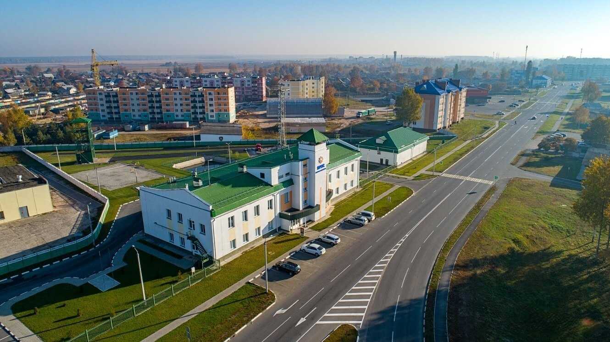

история города
Ветку основали в 1685 г. староверы, которые покинули центральную России из-за религиозных притеснений. Переселенцы вскоре получили грамоту от короля Речи Посполитой, гарантировавшую им свободу вероисповедания и налоговые льготы. В 1695 г. в Ветке появилась первая в ВКЛ старообрядческая церковь Покрова Богородицы, позже начали возводить и другие старообрядческие храмы.
В конце XVII—XVIII вв. Ветка превратилась в крупный торговый и ремесленный центр. Из Ветковской слободы староверие распространилось по всей России и Восточной Польше. В то же время город периодически сжигался московскими войсками, которые таким способом боролись с раскольниками.
В результате 1-го раздела Речи Посполитой в 1772 г. Ветка вошла в состав России. В городе начала развиваться текстильная промышленность, многие жители работали на заготовке леса.
После Октябрьской революции поселок Ветка стал частью РСФСР, но в 1926 г. вернулся в БССР уже городом.
В результате аварии на ЧАЭС в 1986 г. город серьезно пострадал от радиационного загрязнения.
Ветковский музей старообрядчества и белорусских традиций имени Ф. Г. Шклярова
Музей имени Шклярова был основан в 1978 году, однако первая постоянная экспозиция появилась тут всего в 1987 году. Музей функционирует в достроенном и восстановленном историческом особняке, в котором некогда жил купец Грошиков. Экспозиция представлена научно-исследовательскими экспонатам, художественным наследием региона и предметами творчества народных ремесел.
Посетители узнают интересную информацию о православной культуре, увидят предметы быта и интерьера белорусской деревни, а также старообрядческой Ветки XVII-XVIII веков.
Из особо ценных экспонатов в фонде музея представлены уникальные коллекции старообрядческих икон, редкие рукописные и старопечатные книги, датируемые XVI-XIX веками, а также коллекции народного ткачества.
Для тех, кого заинтересуют местные ремесла можно посетить отдел реставрации и возрождения народного творчества, открытый в музее. Сегодня в фонде музея более 11 000 экспонатов.

Хальчанский дворец в д. Хальч
Дворец в деревне Хальч Ветковского района Гомельской области мог бы стать таким же знаменитым, как и Гомельский дворец Румянцевых-Паскевичей. Но этот памятник архитектуры, построенный в стиле позднего классицизма, отчаянно нуждается в реставрации. Вот уже более 40 лет здесь не велись никакие работы, последний раз реставраторы были в Хальче в 1972-1973 годах.
Деревня Хальч расположилась на высоком правом берегу Сожа, она – одна из древнейших деревень Беларуси. Если верить археологам, то первые люди появились на этой земле примерно в V веке до нашей эры. Необычное название населенного пункта, по некоторым предположениям, имеет балтское происхождение. Вероятно, что Хальч основали варяги. Деревня впервые упоминается в летописи под 1437 годом, когда она была подарена предку Халецких Павлу Мишковичу великим князем литовским Свидригайло. С этого момента Хальч – резиденция славного белорусско-украинского рода, члены которого занимали видное положение в Великом княжестве Литовском. Считается, что и фамилия их – Халецкие – пошла от названия деревни Хальч.
Строительство здесь дворца началось в конце XVIII века. Один из Халецких как раз выгодно женился: взял в жены девушку из рода Радзивилл. За счет ее приданного, а также денег, вырученных от продажи Ветки, и было построено роскошное здание в стиле позднего классицизма. Место для возведения дворца было выбрано весьма удачно – на мысе, на высоте 10 метров над Сожем. Имя архитектора, построившего родовое гнездо Халецких, неизвестно.
Первый этаж постройки был кирпичным, а второй – деревянным. Правда, на первый взгляд это было не очень заметно, потому что оба этажа были поштукатурены и покрашены в один цвет. Сначала это был белый цвет, а потом красный. Парадный фасад был украшен портиком ионического ордера. Фасад со стороны парка тоже привлекал внимание. На первом этаже находилась большая полукруглая терраса на сводчатой арочной основе цокольного уровня, окруженная балюстрадой и имеющая две лестницы по бокам. По периметру этой террасы находились восемь колонн, которые поддерживали открытый балкон на втором этаже. На этот балкон выходили стеклянные двери главного бального зала. Восточная сторона здания имела пристройку, на крыше которой находилась еще одна терраса – на этот раз выходящая на реку.
Изюминкой строения была «рустовка», украшавшая стены и наличники первого этажа. Это имитация под природные каменные блоки, немного выступающие на гладкой поверхности.
Внутри дворец поражал своим великолепием. Он имел коридорную схему расположения комнат, но главный зал и другие парадные помещения находились на втором этаже. Во дворце можно было полюбоваться ценной старинной мебелью, полистать редкие книги из обширной библиотеки. Кроме того здесь находился родовой архив Халецких, а также коллекции ковров, серебра и фарфора. Много было во дворце различных картин и рисунков. В советское время все интерьеры дворца были уничтожены.
Главный фасад дворца выходил на открытый двор, на котором располагался газон и фонтан. С двух сторон от главного входа отходили одноэтажные флигели с четырехколонными портиками. К въездным воротам вела длинная аллея, слева от которой находились хозяйственные строения. Усадьба стояла в красивом пейзажном парке, прорезанном широким оврагом, по которому протекал ручей. Через этот овраг был перекинут висячий мост.
Халецкие владели дворцом и усадьбой до 1812 года. Когда Наполеон вступил на эту территорию, они приняли его сторону. После поражения французской армии Халецкие навсегда покинули эти края. Их усадьбу конфисковали и продали с торгов одному из представителей местного шляхетского рода Войнич-Сеножетских.
Последним владельцем дворца был Зигмунд Войнич-Сеножетский, который был знаменит своими балами и охотами, которые он устраивал в Хальче.
В настоящее время во дворце Халецких располагается филиал Гомельского областного краеведческого музея.